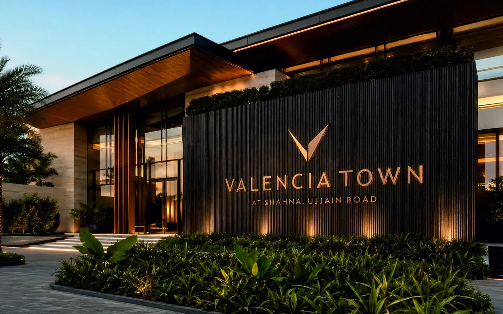
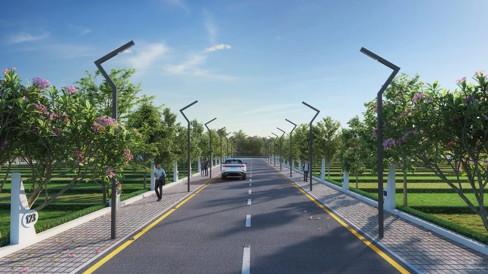

Source
Godrej Properties, Godrej Greenview Estate project page
Accessed 12 October 2026
Read the source“…Godrej Greenview Estate on Ujjain Road, Indore—46 acres of resort-style residential plots…”

Artist’s impression
Forty minutes from Mahakal.
Chapter II · Mahakal
महाकाल के पास, कल का पता।
you home.
Some come for a darshan. Some stay for a lifetime. Every year, crores of devotees travel to Ujjain; at Valencia Town the dawn Bhasma Aarti is a morning drive.
Drive times are approximate and vary with traffic and festival crowds. Not an assurance of future value.

Chapter III · The Road
On the road itself.
Shahna sits on the Indore–Ujjain Road. Indore’s hospitals, schools and airport on one side. Mahakal’s Ujjain on the other.
Artist’s impression
Drive times are approximate and vary with traffic and route.
Chapter IV · Growth
Read this one carefully.
Godrej Greenview Estate · ~46 acres
Godrej Properties has launched Godrej Greenview Estate, a plotted development of about 46 acres on the Indore–Ujjain Road. When a national developer commits to a corridor, it is a signal worth noting. Valencia Town sits on the same corridor, at Shahna.
Source
Accessed 12 October 2026
Read the source“…Godrej Greenview Estate on Ujjain Road, Indore—46 acres of resort-style residential plots…”
Valencia Town is an independent project and is not affiliated with, endorsed by or developed by Godrej Properties Ltd. “Godrej” and “Godrej Greenview Estate” are names of their respective owner, referenced only to describe nearby development, based on publicly available information. Not an assurance of future value or returns.
Chapter V · Tomorrow
What is already on the calendar.
Tomorrow is not a slogan. These are the dates already set around Valencia Town, each with its source.
Not an assurance of future value or returns. Dates are as published by the sources linked and may change.